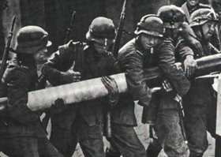
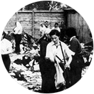

Ana Benkel de Vinocur nació el 25 de setiembre de 1926 en Lodz, Polonia.
Su familia estaba compuesta por cinco personas:
su padre, Henoj Wolf Benkel,
su madre, Rivka Bocian,
su hermano mayor, Hersheck (Enrique), su hermanito menor, Leibush, y ella.
Era una familia feliz de judíos observantes de clase media.
Tenía una voz privilegiada y le encantaba cantar como solista en el coro de la escuela y aprender a tocar el piano.
Lodz era una ciudad industrial, por eso en las vacaciones la familia viajaba en un carro tirado por caballos para descansar en el campo.
Ana disfrutaba del juego con los animales de granja, del aire puro y fresco, de la armonía familiar y de la libertad.
“Se ve gente asustada. De muchos hogares salen muchachos para alistarse en el ejército. Los judíos también se alistan. La gente se despide con angustia. Todos caminan, corren y hasta las hojas de los árboles se quieren escapar más rápido...”

Los alemanes ocupan Polonia.
Cuando los nazis ocuparon Polonia en 1939 tomaron medidas discriminatorias hacia los judíos.
Su propia amiga de la escuela pública le hizo sentir esa discriminación: “No tienes patria”, le dijo. Ana se sintió desconcertada.
“El hermoso día de primavera pareció nublarse de pronto. Hasta ahora yo me consideraba una niña feliz, pero desde que escuché a mi amiga Walka, ya no era la misma...”
En 1940 se aisló a los judíos en el gueto de Lodz. Solo se podían comunicar con el resto de la ciudad cruzando el puente elevado para ir a trabajar para los alemanes a cambio de una mísera ración de comida.
Ana y su familia debieron abandonar su hogar y fueron encerrados en el gueto.
El puente de madera del gueto de Lodz.
Judíos con la estrella amarilla.
“Ahora me toca recortar y coser la insignia que debemos usar sobre nuestra ropa. Estoy observando la estrella de David, el símbolo de los judíos. La insignia de la gloria de un rey que honra la Biblia...
Esta es nuestra estrella, de paz y justicia! ¡No temas, aunque nos quieren inculcar que tú eres nuestra desgracia, para nosotros jamás lo serás!
Cuando terminé de coser todas las estrellas, un mar de lágrimas llenó mis ojos.
Mi madre lo notó y me preguntó si me pasaba algo. Le contesté que se me había nublado la vista de coser tantas estrellas, ya que somos unos cuantos los que tendremos que usarlas...”
“Mis pensamientos me abruman, pero la realidad es esta: el gueto, el hambre, la desesperación. A pesar de tantos sucesos y penurias me queda algo de optimismo. Cuando miro el sol, me parece tener más esperanza. En este abatimiento y este dolor en todos los instantes, no maldigo a la vida, al contrario la amo aún...”
“¡Por eso quiero vivir! Sobrevivir, para contar todo lo que he visto y sufrido. Soy tan joven, ¿qué mal he hecho? y ya me han humillado y ofendido, ¿por qué? ¿Solamente porque pertenezco al pueblo judío?”

Recogiendo los objetos que traen los prisioneros.
En 1944 Ana, sus padres y su hermano fueron deportados al campo de exterminio de Auschwitz. El padre y Herschek fueron separados de Ana y su madre. Los nazis asesinaron al padre de Ana en las cámaras de gas.
"Todos estamos confundidos. (...) Sentí un gran temor, porque nos están separando de nuestros padres y hermanos. El soldado S.S. manda ponernos en filas de a cinco. No sabemos el significado.
-¡A la derecha! ¡A la izquierda!, grita el nazi, insulta y amenaza.
La atmósfera olía a algo siniestro, ¿por qué estas separaciones? El pánico se extiende en los ánimos, pero el que protesta cae muerto en el acto. Los alemanes lo demostraron con rapidez. La gente quiso protestar, pero sin éxito, además para rebelarse se precisan fuerzas o armas. Nosotros no tenemos ni lo uno ni lo otro.
(...) Ya me toca a mí.
-¡A la derecha! Grita el nazi. Tiemblo por mamá. ¿Qué crimen cometimos para que nos traten así? ¿Cómo describir las dramáticas separaciones de seres queridos? Le toca a mamá.
-¡A la derecha!
(...) En este momento nos están diciendo que tenemos que dejar absolutamente todas nuestras pertenencias porque nos darán otras. (...) Con gran tristeza dejamos todo lo que habíamos traído del gueto. Me da lástima dejar el álbum de las fotos, el tejido... Me costó tanto trabajo sacar el dibujo. En fin, ahora tenemos que tirar todo, por cualquier lado. ¿Por qué hacen esto?"
Ana logró sobrevivir a Auschwitz y otros campos.
Luego de la guerra, en 1947, viajó hacia Uruguay donde se reencontró después de varios años con su hermano Herschek, de quien no sabía si había sobrevivido. “Ese fue el día más feliz de mi vida”, contaba Ana.
Ana se casó, tuvo dos hijos y cuatro nietas.
Consagró su vida a testimoniar lo que vivió en el Holocausto relatando sus experiencias en diferentes ámbitos.
Escribió tres libros: "Un libro sin título",
"Luces y sombras después de Auschwitz" y
"Volver a vivir después de Auschwitz".
Falleció el 7 de enero de 2006, a la edad de 79 años.